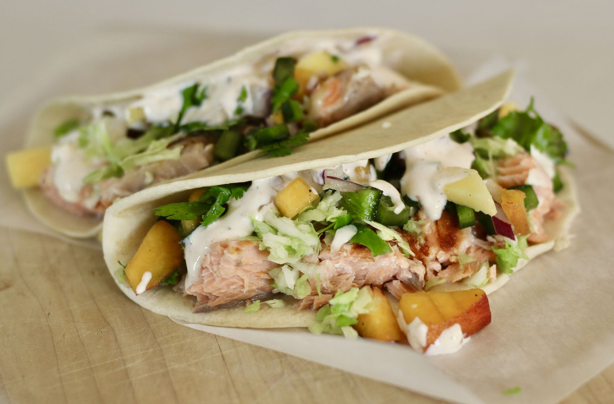

Salmon Tacos with Mango Salsa

Salmon Tacos with Mango Salsa Recipe
Grilled salmon wrapped up in a small tortilla,
topped with peach-mango salsa, shredded cabbage,
avocado, and a special sauce.
Ingredients
Mango Salsa:
- 3 mangoes, diced
- 2 peaches, diced
- 3 poblano peppers, seeded and diced
- ½ red onion, diced, or more to taste
- ½ lime, juiced, or more to taste
- 1 bunch cilantro, chopped, divided
Special Sauce:
- 1 (8 ounce) container sour cream
- 3 tablespoons mayonnaise
- 1 tablespoon ketchup
- ⅛ teaspoon ground cayenne pepper
- salt and ground black pepper to taste
- 24 (6 inch) corn tortillas
- cooking spray
- 2 pounds fresh salmon
- 1 small head cabbage, shredded
- 3 avocados, sliced
- 2 limes, cut into wedges